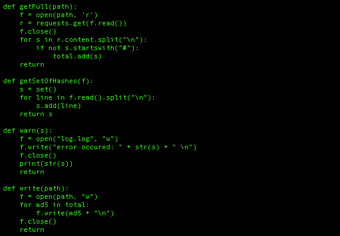
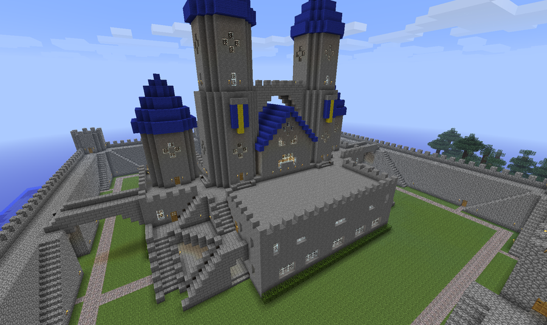
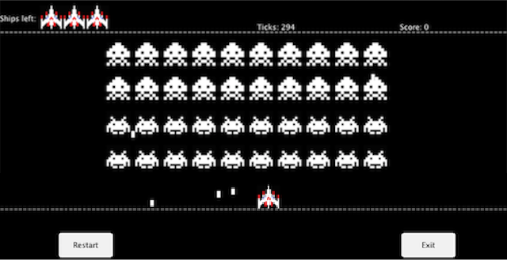
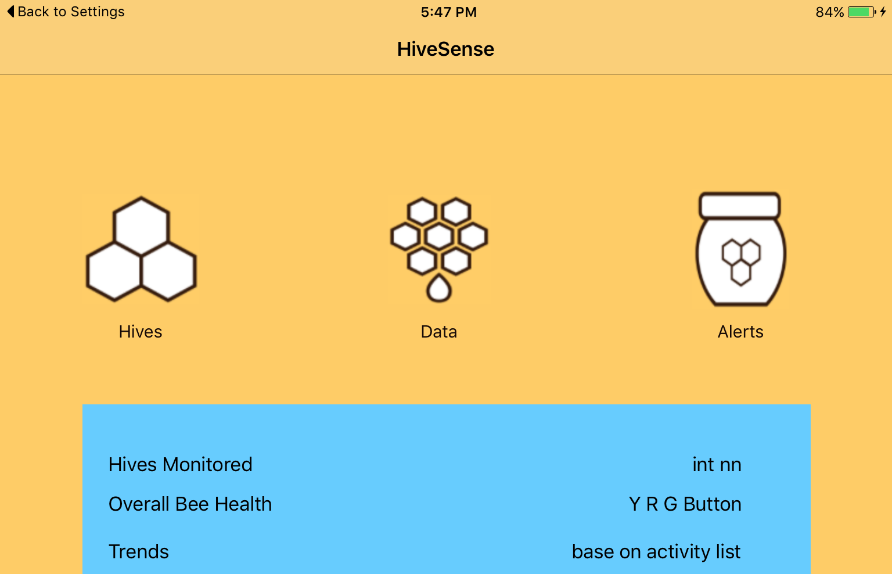

About Me

I am a Software Engineering student at Carleton University. I started my first year in 2015. I take an interest to software, and software design, particularly to security. My hobbies include making mods or plugins for video games, ethical hacking, and seeing how things work from a software standpoint. Below you will see my previous projects, resume, and descriptions of my work experience.
Projects On My Github
LANMessengerServer
The LANMessengerServer that I created is a secure way of storing, and retrieving messages to others, or notes to yourself while on the same network as the server. It uses Node, Mongo. It also uses good security practices such as end-to-end RSA encryption, and MAC filtering, and authentication for posting.
Simple AntiVirus
My Simple AntiVirus is an antivirus in python that collects hashes from a remote database at VirusShare, and compares the files you are scanning to the malicious, detected hashes.
Minecraft Plugins
My largest project is a plugin for a Java Minecraft Server. It uses principles of Object-Oriented design to create gameplay, and uses checks on players as an anticheat. While working on it I gained some experience with firewalls, and good server practices.
Space Invaders
Space Invaders was a school project in which I recreated a popular arcade game using object oriented principles in Java. It features a UI, and difficulty selector. It is the project that I am the most proud of, as it has a very clean design, and clean code.
HiveSense
I competed at Random Hacks of Kindness with TwelveDot to create a beehive monitoring system. I was in charge of the app, UX, and displaying data. I used iOS coding principles with a web server to read data.
EngComp 2015
I competed with a group of friends in the Carleton 2015 Engineering Competition for the programming section. The challenge was to make a program to help in quality assurance to assess images of washers.
Work Experience
Security Analyst
TwelveDot Inc.
- Implemented network traffic analysis suite to check communication logs for malicious activity by using remote database and GPU-accelerated computing.
- Demonstrated MITM attacks, and prevention techniques to a non-technical audience to educate them on common tactics used to breach companies.
- Collaborated on iOS app used to track users using a cloud interface.
QA Engineer
Magmic Inc.
- Collaborated to test and debug applications to find bugs using a team-oriented style for multi-user applications.
- Filed reports using JIRA to explain bugs, and steps to reproduce for developers and upper management to schedule fixes based on the importance of the bug described in the report.
Java Developer
Yom Network
- Independently maintained a Java game server by interviewing users and managers, and adding features and modifications using Object Oriented principles based on feedback.
- Implemented measures for anti-cheat, and firewall using analysis of server's needs, and what type of data it would be processing to improve performance and limit attacks/exploits.
Android Developer
bv02
- Collaborated in a team environment using git to control version for development of an app used in music education, and scheduling.